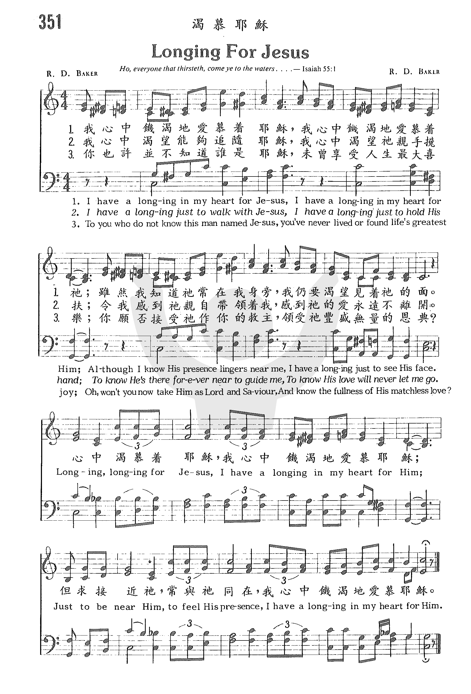
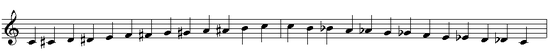

(請點耳機收聽)
(請點耳機收聽)拉撒路病了，全家都渴慕耶穌的來臨，然而耶穌為了成就更大的計劃，卻延遲起程。
| Longing for Jesus Richard Dee Baker (1927-2011) |
渴慕耶穌 |
| Verse 1 I have a longing in my heart for Jesus, I have a longing in my heart for Him; Although I know His presence lingers near me, I have a longing just to see His face. Chorus Longing, longing for Jesus, I have a longing in my heart for Him; Just to be near Him, to feel His presence, I have a longing in my heart for Him. Verse 2 I have a longing just to walk with Jesus, I have a longing just to hold His hand; To know He's there forever near to guide me, to know His love will never let me go. Verse 3 To you who do not know this man named Jesus, you've never lived or found life's greatest joy; Oh, won't you now take Him as Lord and Saviour, and know the fullness of His matchless love? |
Verse 1 我心中饑渴地愛慕著耶穌， 我心中饑渴地愛慕著祂； 雖然我知道祂常在我身旁， 我仍要渴望見著祂的面。 Chorus 心中渴慕著耶穌， 我心中饑渴地愛慕耶穌； 但求接近祂，常與祂同在， 我心中饑渴地愛慕耶穌。 Verse 2 我心中渴望能夠追隨耶穌， 我心中渴望祂親手提挈； 令我感到祂親自帶領著我， 感到祂的愛永遠不離開。 Verse 3 你也許並不知道誰是耶穌， 你還沒享受人生的最樂； 啊！你能否接受祂作你救主 領受祂豐盛無量的恩典？ |
|

|
|
https://youtu.be/z3dZhmY1u3k
渴慕耶穌Longing for Jesus (中英伴奏版)
https://youtu.be/ubpBE7dk2Ag
青年聖歌選輯4.主必快來
https://youtu.be/qDMkmd9gM8k
Longing for Jesus · Ge-Fang Yang
https://youtu.be/kuiNHC4AB7Q SAUDADE DE JESUS - (LONGING FOR JESUS)
http://www.hymncompanions.org/Sep/20/stream.php
渴慕耶穌
Longing for Jesus
我心中饑渴地愛慕著耶穌，我心中饑渴地愛慕著祂；
雖然我知道祂常在我身旁，我仍要渴望見著祂的面。
我心中渴望能夠追隨耶穌，我心中渴望祂親手提挈；
令我感到祂親自帶領著我，感到祂的愛永遠不離開。
你也許並不知道誰是耶穌，你還沒享受人生的最樂；
啊，你能否接受祂作你救主，領受祂豐盛無量的恩典？
（副歌）
心中渴慕著耶穌，我心中饑渴地愛慕耶穌。
但求接近祂，常與祂同在，我心中饑渴地愛慕耶穌。
(請點耳機收聽)
拉撒路病了，全家都渴慕耶穌的來臨，然而耶穌為了成就更大的計劃，卻延遲起程。
基督徒的心中也常渴慕耶穌，願我們以恆久和忍耐，持守著這份信心，最後得見神的榮耀。
這首詞曲都是貝珂（Richard D. Baker, 1927- ）所作。 他是美國德克薩斯州人，先後就讀於貝勒大學（Baylor University）及浸信會西南神學院。畢業後出任德州福和市浸信會的音樂主任。 六年後，他轉向音樂佈道的事工達十八年之久。
他在浸信會全國大會中擔任獨唱，負責音樂事工，也在葛理翰佈道大會上獻唱。貝珂的兄弟貝博是佈道家，他們常相偕在世界各地佈道。 他也錄製唱碟，一共作了一百多首歌。
他曾是德州一音樂出版社的副總裁。
白潘（見三月十二日）的女兒白茜苓（Cheryl
Lynn Boone）在一次靈性非常低落時，神賜給她一首歌詞，她配上了曲調，命名「父神」（Father
God），其歌詞如下：
父神，為什麼離棄我？
真知道我的存在嗎？ - 祢是否關心？
父神，若祢的愛無比滿溢，
求祢除去我的痛楚；救我脫離懼怕。
父神，空洞的詞句響亮清晰，
若祢真實存在，神啊！為何不回答我？
父神，這世界就如苦海；
人是否必須付出痛苦的代價？
時光不斷溜走；我求問，但未獲得答案。
難道祢恰巧沒有聽見我的禱告？
是我麻木？- 還是祢已離開我？
現在祢在那�堙H
我十分需要祢–沒有話對我說嗎？
(請觀賞 Youtube 演唱版)
（神的回應）
無論你有何懷疑，
我的孩子，我總是愛你；
你所居住的世界屬於撒但。
不斷的尋我 – 就必尋見。
我的愛子被害，但從墳墓中復活。
你所受的死亡經歷已完成，
起來 －－ 這是你復活的日子！
中英文聖詩集參考
英文歌名 Longing
for Jesus
頌主新歌 425
頌主新歌(中英雙語) 430
教會聖詩 351
聖徒詩集 563
聖詩 391
讚美 206
青年聖歌II 81
校園詩歌I 220
http://pt.fuyinchina.com/m/view.php?aid=4158
理查德.贝克（Richard D.Paker，1927-2012）作词作曲
我心中饥渴地爱慕主耶稣，我心中饥渴地爱慕耶稣， 虽然我知道祂常在我身旁，我仍要渴望见着祂的面。 我心中渴望能够追随耶稣，求圣手领我每日行天路， 虽然我知道祂不会撇下我．但若稍离我就感到寂寞。 你若还未曾认识基督耶稣，就还没有获得人生真福， 若今日立时接受祂为救主，便能得到主恩生命丰足。 心中渴慕主耶稣，我心如饥似渴爱慕耶稣； 但求亲近祂，常与祂同在，我心如饥私渴爱慕耶稣。
理查德.贝克是美國德克萨斯州人，先後就读於贝勒大学（Baylor University）及浸信会西南神学院。毕业後出任德克萨斯州福和市浸信会的音乐主任。 六年後，他转向音乐布道的事工达十八年之久。 他在浸信會全國大會中擔任獨唱，負責音樂事工，也在葛理翰佈道大會上獻唱。贝克的兄弟贝博是布道家，他們常相偕在世界各地布道。 他也录制唱片，一共作了一百多首歌。 他曾是德克萨斯州一家音乐出版社的副总裁。
1651 渴慕耶穌 Longing for Jesus

https://hymnary.org/person/Baker_Richard
| Short Name: | Richard Baker |
| Full Name: | Baker, Richard (Richard D.) |
| Birth Year: | 1927 |
| Death Year: | 2011 |
Baker, Richard Dee. (Farmersville, Texas, May 12, 1927--September 5, 2011). Educated at Baylor University and Southwestern Baptist Theological Seminary. Minister of music, Birchman Avenue Baptist Church, Fort Worth, Texas (1950-1956), then a music evangelist for eighteen years. In 1975, he was vice-president of Crescendo Publications, Dallas, Texas, and music coordinator of the World Evangelism Foundation. He was a recording artist and composed more than 100 songs.
https://www.baptistpress.com/resource-library/news/dick-baker-composer-musician-dies-at-84/
PLANO, Texas (BP) — Richard D. “Dick” Baker, a
prolific composer and former minister of music, died Sept. 5 in Plano, Texas. He was 84.
Southwestern Baptist Theological Seminary honored the distinguished alumnus in chapel Sept. 7 and Prestonwood Baptist Church in Plano will hold a public celebration service in Baker’s memory Sept. 10 at 2 p.m.
Baker began composing songs in 1947 and continued writing throughout his lifetime, publishing more than 300 gospel compositions, with several of them translated into other languages. Baker’s hymns include “All to Thee,” “Longing for Jesus,” “His Way Mine” and “Have You Been to Calvary.” Many of his songs were written with his brother, Bo, a former pastor at Birchman Baptist Church in Fort Worth and Plymouth Park Baptist Church in Irving, Texas
For two decades, Baker and his brother traveled the United States and the world as an evangelistic team.
After relocating from Denton, Texas, where the Baker family was active in First
Baptist Church, he and his wife Ann became involved in a 75-member mission in
north Dallas that became Prestonwood Baptist Church. In 1978, he was called to
serve as the congregation’s first minister of music, developing a 200-300 member
choir, full orchestra, music conservatory and choir programs for children and
youth. His wife assisted him in much of his ministry, including the development
of three annual music productions. In 1992 he returned to be ministry of music
evangelism until 2007.
Southwestern Seminary honored Baker with the L.R. Scarborough Award in 2001 and named him a distinguished alumnus 2005. The seminary established the Richard Baker Chair of Music Missions and Evangelism in his honor in 2004.
Baker was born May 12, 1927 to B.O. and Martha Dee Baker in Farmersville, Texas, where the family was active at First Baptist Church. After serving in the Navy near the end of World War II, Baker returned to his studies at Baylor University, graduating in 1950. While a student, Baker became part of the Youth Revival Movement as a music leader and soloist. He began the Baylor Religious Hour Choir that was an integral part of a campus midweek service and a touring gospel choir that remains active 62 years later. He also co-wrote the Baylor fight song that is still used by the university.
After Baylor, Baker served as minister of music at Birchman Baptist Church in Fort Worth and earned a degree in sacred music from Southwestern Seminary in 1953. In 1956 Baker became a full-time music evangelist. He was a member of the Billy Graham team in the Akron, Ohio, crusade and was recruited to help with music at the New York City crusade in Madison Square Garden which extended to 17 weeks.
Baker was preceded in death in 2008 by his wife and in 2010 by his brother. He is survived by his son Paul Baker, daughter Lori Simmons and four grandchildren.
The Sept. 7 chapel audience of Southwestern Seminary joined in singing Baker’s hymn, “All to Thee” accompanied on the organ by H. Gerald Aultman, professor of music theory and Dick Baker Chair of Music Missions and Evangelism.
“We are so very grateful for the ministry of Dick Baker,” Southwestern Seminary President Paige Patterson said. “He wrote an unbelievable number of songs. We have lost a great, great missionary and evangelist of song,” he said, adding, “His songs always had such wonderful theological content.”
Even in the last days of his life, Baker labored to share the Gospel and write
music, fulfilling his life verse, “The Lord is my strength and my shield; my
heart trusts in Him and I am helped. Joy rises in my heart and with my song I
will praise Him” (Psalm 28:7).
longtime minister of music.
In lieu of flowers, contributions may be made to the endowment fund at Baylor University for the Baylor Religious Hour Choir. For more information about the life and ministry of Dick Baker, pleae visit www.HisWayMine.com
–30–
Compiled by Tammi Reed Ledbetter of the Southern Baptist Texan, newsjournal of
the Southern Baptists of Texas Convention, with reporting by Keith Collier of
Southwestern Baptist Theological Seminary.
https://zh.wikipedia.org/wiki/%E5%8D%8A%E9%9F%B3%E9%9F%B3%E9%9A%8E
半音音階（Chromatic Scale）或半音階是指有12個不同音高順序排列的音階，每兩個音之間差半個音。 學理上半音音階為了表現音樂的特性而有了三種不同的記譜方式：
1. 和聲半音階
為了配合調性和聲基本的三和絃結構變化，音階上全音之間插入的變化音在上行與下行時都以降低上方音為主，唯獨第四、第五音之間升高第四度音。以C大調為例，其半音階記譜如下：
C - Db - D - Eb - E - F - F# - G - Ab - A - Bb - B - C - B - Bb - A
- Ab - G - F# - F - E - Eb - D - Db - C
2. 任意半音階
調性和聲發展到七和絃的全面運用，必須考慮七和絃結構上的變化，所以其半音階的記譜也跟著配合改變。上行時插入的變化音是低音的升高音；下行時則為高的音的降低音，另外，不管上下行的第四、第五度音之間，必須升高第四度音；第六、第七度音之間降低第七度音。以C大調為例，其半音階記譜如下：
C - C# - D - D# - E - F - F# - G - G# - A - Bb - B - C - B - Bb - A
- Ab - G - F# - F - E - Eb - D - Db - C
3. 近代半音階
音樂發展直到後來已跳脫調性的束縛，尤其近代調性的淡化，音階也產生了變化。如上面的譜例，已簡化成： 上行（Ascending）音階主要用升音記號（#）；下行音階（Descending）主要用降音記號（b）。
任何一個音高上均可建立半音音階，做出該調的半音階。
註：半音階的記譜是因和聲的演化而來，調性的七聲音階只分大小調，而小調的音階還分成自然小音階（古式小音階）、和聲小音階（變化小音階）、旋律小音階及現代小音階。其中和聲小音階（變化小音階）在大小調性的基礎上，被視為是大調變化而來的，因此上述各個半音階的構成都建立在大調的基礎上。 
https://www.youtube.com/watch?v=btSdyj2n-6w 半音階chromatic scale 鋼琴教學|樂理教學
{kind=link}
{kind=link}